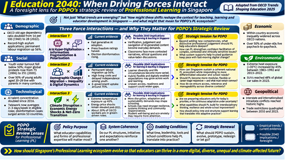
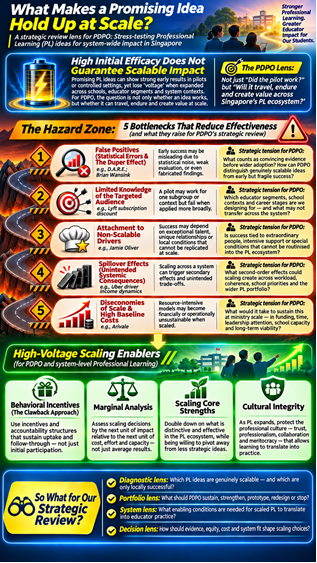

From future pressures to strategic choices
We begin by looking outward at the forces reshaping education and professional learning. We then turn inward to consider what makes our responses effective and sustainable across different contexts. Together, these perspectives will help us examine PDPO’s purpose, approaches and enabling conditions, and make more deliberate choices about what to take forward in 2027.
OECD: forces, interactions and assumptions.
Voltage: evidence, context and implementation.
Retreat: strategic choices and 2027 commitments.
How to prepare: View the first two infographics and read the attached curated source PDFs. Use the questions to guide your thinking; you need not submit answers.
Education 2040: When driving forces interact
Why we are reading this. The OECD report helps us move beyond isolated trends and consider how demographic, technological, economic, environmental and social pressures may interact. Its foresight tools help us challenge assumptions, not predict a single future.

Source: OECD (2025), Trends Shaping Education 2025, selected printed pp. 10–20 (11 pages). PDF includes key trends, cross-cutting themes and futures-thinking tools. The infographic is a PDPO interpretation, not an OECD publication.
Questions to hold in mind
How this feeds the retreat: Primarily informs our purpose and focus, approach and design, and the external pressures that should shape strategic renewal.
What makes a promising idea hold up at scale?
Why we are reading this. A promising pilot or well-received resource does not guarantee impact across schools. This reading invites us to test evidence, variation across contexts, dependence on individuals, unintended consequences, costs and the conditions for sustained adoption.

Source: Nopadol Rompho (2023), review essay on John A. List, The Voltage Effect, Behavioural Public Policy, 6 pages. This is a critical book review, not the original book. The infographic is an interpretive PDPO aid.
Questions to hold in mind
How this feeds the retreat: Primarily informs approach and design, system conditions, and choices about what to sustain, strengthen, redesign, prototype or discontinue.
Five questions the readings prepare us to tackle
These are thematic working formulations, to be reconciled with the exact wording in the final facilitation deck.
| Strategic question | How the readings help |
|---|---|
| 1 · Purpose & Focus What should PL enable for educators? | OECD challenges our assumptions about future educator needs, including the meaning of professional growth in an AI-enabled world. |
| 2 · Approach & Design What learning and support approaches will work? | OECD broadens possible approaches; Voltage tests whether those approaches can travel across contexts. |
| 3 · System Conditions What enables sustainable change? | Voltage highlights implementation dependencies, incentives, costs, culture and unintended effects. |
| 4 · Strategic Renewal What should we sustain, evolve, prototype, redesign or let go? | Both readings provide lenses to question relevance, impact and feasibility. |
| 5 · 2027 Priorities What should we concretely commit to? | Translate insights into prioritised workpieces, dependencies and evidence of progress. |
Three reflections to prepare for our discussion
There is no need for polished answers. Bring one concrete example or tension from our work where possible.
These notes stay on this page. They are not sent to PDPO or any server; copy them before closing the page.